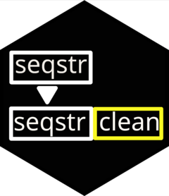

Longest Common Substring Note Cleaning for Hybrid Method
Source:R/lcsclean_hybrid.R
lcsclean_hybrid.RdThis function is used to apply the longest common substring method to extreme values in a dataset.
To be used after applying firstnchar() and extremeid(). Dataset should have
a "page_notes" column corresponding to the cleaned notes outcome from firstnchar().
Arguments
- dataset
the dataset containing the notes
- notes
the column name for the notes
- propor
minimum necessary of matching proportion of previous notes for removal
- identifier
column name for uniquely identifying identification
- pageid
column name for page number
- toclean
column name for identifying column of notes to clean (TRUE/FALSE)
Examples
test_dataset <- data.frame(ID=c("1","1","2","2","1", "3","3"),
Notes=c("The","The cat","The","The dog","The cat ran",
"the chicken was chased", "The goat chased the chicken"),
Page=c(1,2,1,2,3,1,2), cleaning = c(FALSE, FALSE, FALSE, TRUE, FALSE, FALSE, TRUE),
page_notes = c("The","The cat","The","The dog","The cat ran",
"the chicken was chased", "The goat chased the chicken"))
lcsclean_hybrid(test_dataset,"Notes",0.25,"ID","Page", "cleaning")
#> ID Notes Page cleaning page_notes
#> 1 1 The 1 FALSE The
#> 2 1 The cat 2 FALSE The cat
#> 3 2 The 1 FALSE The
#> 4 2 The dog 2 TRUE The dog
#> 5 1 The cat ran 3 FALSE The cat ran
#> 6 3 the chicken was chased 1 FALSE the chicken was chased
#> 7 3 The goat chased the chicken 2 TRUE The goat chased the chicken
#> lcs_notes hybrid_notes
#> 1 <NA> The
#> 2 <NA> The cat
#> 3 <NA> The
#> 4 dog dog
#> 5 <NA> The cat ran
#> 6 <NA> the chicken was chased
#> 7 The goat The goat